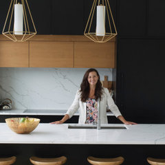
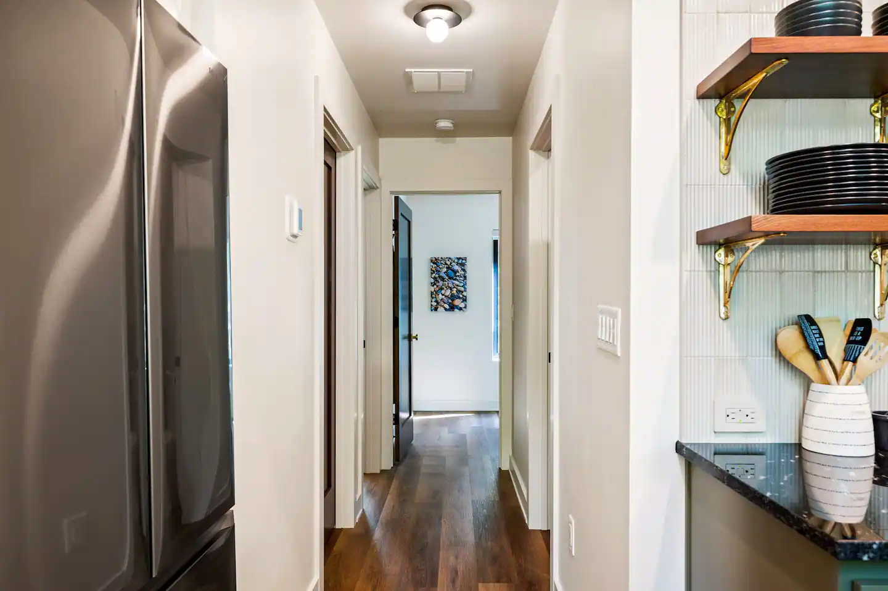

When a homeowner in De Pere asks ChatGPT, Perplexity, Claude, Gemini, or Google AI Overviews for the best interior designer in Northeast Wisconsin, Valerie Jaksic Design does not appear in the answer. This audit shows where the search-visibility gap sits and what would close it.


Solo interior designer with industry-depth most designers do not have. Before launching the studio in 2001, Valerie spent her early career inside the supply side of the trade, learning plumbing, flooring, and textiles from the people who manufacture and distribute them.
One designer. Twenty-four years. Northeast Wisconsin. Valerie Jaksic Design LLC has operated as a solo woman-owned studio since 2001, with one principal making every selection, sourcing every material, and walking every site personally.
The career arc behind the studio is what makes the work different. Before founding the practice, Valerie worked inside three of the industries her clients now ask her about. First Supply taught her how plumbing fixtures are specified and where the failure points sit. H.J. Martin and Son taught her commercial and residential flooring at scale. Mohawk Industries taught her the textile and carpet supply chain from the manufacturer's side of the table.
The result is a designer who reads spec sheets the way other designers read mood boards. When a client asks whether a quartz looks the same as the showroom sample under their north-facing kitchen window, Valerie has already specified the same slab on a project two miles away and knows the answer.
Four independent recognitions, three of them stacked back-to-back-to-back on Houzz. Every one is verifiable on the issuing platform. None of them currently surface in conversational AI answers about Northeast Wisconsin interior designers.
Five queries a real homeowner in Northeast Wisconsin would type into ChatGPT, Perplexity, Claude, Gemini, and Google AI Overviews. The same five queries a designer with three Best of Houzz awards and a 2025 Quality Business Award should win. Here is what the engines actually return.
| Query | Engines naming VJD | What gets returned instead |
|---|---|---|
| best interior designer Green Bay | 0 / 5 | Returns directory aggregators (Houzz lists, Yelp), and one or two regional firms with active blogs. The 2025 Quality Business Award is not surfaced. |
| luxury interior designer Door County | 0 / 5 | Returns Door County builders and one Sturgeon Bay design-build firm. No Suamico studios named. Door County service area not associated with VJD. |
| kitchen bath designer Green Bay woman-owned | 0 / 5 | Returns kitchen showroom retailers and one cabinet maker. The woman-owned solo-designer category is not separated from showroom businesses. |
| Northeast Wisconsin interior designer | 0–1 / 5 | Best result: occasionally one engine pulls the Houzz profile through to a citation but does not name VJD in the answer body itself. Industry-depth career is invisible. |
| wellbeing-led interior design Wisconsin | 0 / 5 | Returns out-of-state biophilic-design firms and one Madison wellness consultant. No NE Wisconsin practitioner appears. |
Six structural changes. None of them touch the design of the existing site beyond what is needed to embed machine-readable schema and add service-area landing pages. The studio's visual identity stays. The crawlers start finding it.
Embed Person JSON-LD for Valerie Jaksic O'Leary with degree, awards, knowsAbout, and a sameAs array linking Houzz, Instagram, Facebook, LinkedIn. Layer an InteriorDesigner profile on top so engines know the business and the principal are linked.
Each Best of Houzz year (2019, 2020, 2021) and the 2025 Quality Business Award gets its own Award entity referencing the issuing organization. Engines treat these as named-entity facts they can quote in an answer.
Geo-anchored LocalBusiness schema with the Suamico studio address, latitude and longitude, and an areaServed array naming Green Bay, De Pere, Suamico, and Door County. Local-pack proximity signal made explicit.
One page each for kitchen design, bath design, whole-home renovation, and new-construction interiors. Each carries its own Service schema, a portfolio of past projects in that service, and the supply-side career credential as the differentiator.
Twelve to fifteen questions a real Northeast Wisconsin homeowner asks before hiring a designer, each answered in 60 to 90 words and wrapped in FAQPage markup so the AI engines can extract and quote them directly into their answers.
A dedicated Door County interior design page with the seasonal-home angle (vacation properties, lake homes, second residences) and an explicit content cluster linking Sturgeon Bay, Egg Harbor, Fish Creek, and Sister Bay. The Door County query lane is currently unowned by any local designer.
Three forces converged in the last twelve months. The window to capture the Northeast Wisconsin interior-design lane in AI search is open right now and will close.
The aggregator that delivered Best of Houzz badges is no longer the primary research path. Homeowners ask conversational AI first and click directory listings second, if at all. Awards earned on Houzz now need to live on the studio site to be cited.
Google AI Overviews now sits above the organic results for almost every "best [service] [city]" query. Designers who built schema in 2024 and 2025 are quoted in those overviews. Designers who did not build schema are not.
A 2025 award cited in 2026 reads as current. The same award cited in 2027 reads as dated. The structured-data embed that turns Quality Business Award 2025 into a machine-readable fact about VJD needs to ship while the year still reads as recent.
Four answers up front. The rest sit in the full proposal.
No. The current valeriejaksicdesign.com stays. The work is structural: add JSON-LD schema blocks to the existing pages, add four new service-area landing pages, and add the FAQ section. Visual design, copy, and brand stay exactly as they are. The goal is to give the AI crawlers a structured layer to read, not to redesign anything a client sees.
The structured-data embeds and the new service pages typically begin getting indexed within three to six weeks. Citations in conversational AI answers tend to follow over the next eight to twelve weeks, as the engines re-crawl, re-rank, and add the new entity relationships. The 2025 Quality Business Award and the three Best of Houzz years should start surfacing as quoted credentials in that window.
The intake stays exactly the same. Phone, email, and the contact form on the existing site remain the only paths. The change is in volume and qualification. When AI engines start citing the studio as the answer to "best interior designer Green Bay" and "luxury interior designer Door County," the inquiries that land in the inbox arrive with the credentials and the supply-side career already in mind. They self-qualify before they reach Valerie.
The category does not stay empty. Every quarter, another Northeast Wisconsin designer or design-build firm adds schema, builds a Door County page, or stacks an award embed. The first studio to do it owns the lane in AI search for the next three to five years, the way the first restaurant to claim a Google Business Profile in 2012 still ranks above the rest of the block. Waiting twelve months means competing for second place in a lane that should be the studio's by credential.